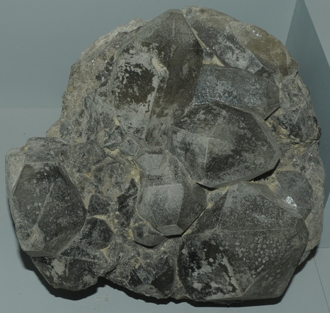

|

| KNa22(SO4)9(CO3)2Cl
This sample of hanksite is displayed in the Smithsonian Museum of Natural History. Hanksite is a has the composition KNa22(SO4)9(CO3)2Cl. The sample at left is about 20 cm across and is from Searles Lake, San Bernadino County, California.
|